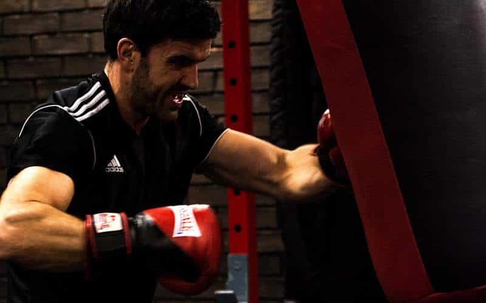
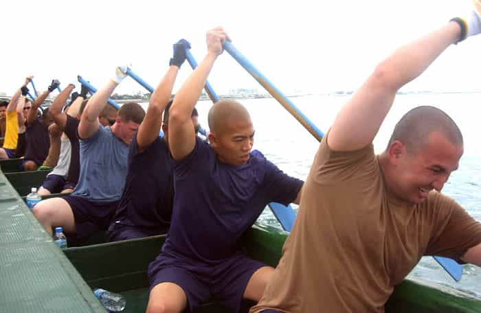
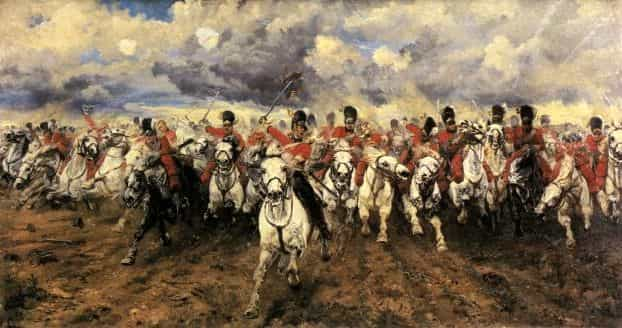
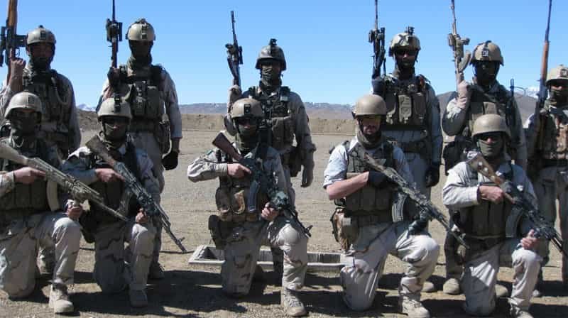

Daryush "Roosh" Valizadeh created ROK in October 2012. You can visit his blog at RooshV.com or follow him on Twitter and Facebook.


If I were to describe neomasculinity in one phrase, I’d take a page from Donald Trump’s playbook and have it be “Make Men Strong Again.” Most of the work I’ve published in the past decade has had the common end of giving tools and knowledge to men so that they do more than before, whether it’s with meeting women, improving their health and physical stature, making more money, understanding reality in a more objective way, or having valuable experiences around the world. The rise of feminism and egalitarianism has fed poison to men with the goal of making them weak, emaciated replicas of who they once were. This must be reversed.

Masculinity is the connection between physical and mental strength. Physical strength is having the endurance and power to fulfill the will of the mind, which must possess knowledge, courage, hope, determination, and a truthful interpretation of reality. If you’ve been reading me for any length of time, you’ve already embarked on a journey of strengthening both your body and mind.
The problem we have today is that men shield themselves from all difficulty and even the experience of life. We now have 21-year-old male students crying on the shoulders of feminists in designated safe spaces on college campuses because they heard mere opinions they didn’t like. Those safe spaces, whether literal or metaphorical, prevents men from becoming masculine. It would be the same as having a gym with only treadmills and no weights.

Do you remember the first movie that made you cry? For me it was E.T. I cried in the scene where the ugly alien had to get on the spaceship and leave behind his human friend. I saw E.T. many times as a child, and didn’t cry again after that first time, because I fully expected the sad scene and was already exposed to it. If you want to become masculine, you must continually expose yourself to challenging situations and endure them in order to build strength.
The way to know if you’re getting stronger is to recollect a past difficulty in your life and ask how you’d respond to it now. If it wouldn’t even bother you today, you’ve gotten stronger. If it still gives you a similar amount of anxiety, you haven’t gotten stronger.
In 2011, a few individuals gave multiple fake one-star reviews on my Amazon books. This caused me a lot of stress, and I worried about it for days and how it would affect my income. If this happened today, it wouldn’t even create one minute of mental disturbance. I probably wouldn’t even notice. Because of far harder events I’ve had to endure since, I no longer experience anxiety on things that used to trouble me before, simply because I’ve purposefully put myself through an escalating series of difficulties. I have increased my masculine strength.

1. You live more according to your biological nature. Men are animals that hunt, kill, fight, protect, and survive. Anything you do which increases your strength will be fully compatible with genetic coding that has evolved over millions of years. Being weak does not at all complement this coding, unless it’s a temporary submission strategy that allows you to survive today so that you can fight tomorrow.
2. You will be more naturally attractive to women. Many aspects of game mimic the traits of men who are strong, but once you have genuine strength, you no longer need to role-play or consciously apply game. Women have a sixth sense for strength and will be drawn to the men who display it.
3. You will be more able to protect and defend your tribe and family. If those close to you are suffering, you will be better positioned to help them weather the storm as a strong man than as a weak one. Men who are weak can barely help themselves, let alone others.
4. You will be more able to successfully respond to problems in your own life. If you’ve been building strength by not shying away from new challenges and tough situations, you’ll be able to handle a future problem that is many times more difficult. You won’t panic, sob, or feel impotent to deal with your troubles.
5. You will be seen as a leader. Being a leader is not a conscious decision a man can make, but a side effect of the strength that he has been built up. When you become strong, people will begin following you. This can be used in all areas of your life, especially in business.
6. You will be able to transmutate your mental strength into physical defense. Can you imagine a weak man buying a gun to willingly face a group of home invaders? He would insist beforehand that “guns are dangerous” and hope the police will save him. Unless you develop courage, you won’t be able to defend yourself in crucial moments.
If you’re a man, becoming strong should be as natural of a drive for you as a wolf hunting deer. Unfortunately, propaganda from the media, government, and universities has shamed men out of pursuing this instinct while teaching women to be “strong” instead… strong consumers and strong complainers. The current order is unnatural, weak, and androgynous. Both men and women are suffering because of it.

Masculinity is the swimming pool that strong men train in. It’s a collective set of behaviors and beliefs that focus solely on increasing strength for men. If you’re strong, you’re most likely masculine, and if you’re masculine, you’re most likely strong, which is why masculinity is being criminalized by the Western establishment. Those with power fear strong, masculine men, because historically it was these men who challenged the rule of unjust governments and killed those who were corrupt and toxic to the nation.
In February 2016, I tried to organize meetups for masculine men around the world. You are probably already aware of the result: media in dozens of countries worked alongside politicians, local police, and hordes of disgusting feminists to get them shut down. Outnumbered, and with dystopian laws ready to lock us up for invented crimes, I had to cancel the meetups.
Many of us in the West live in an inverted society where strength is shamed and weakness is glorified, all for the purpose of ensuring that our globalist rulers never face a threat to their power. The establishment can stop our meetups, but they won’t stop our genetic desire for wanting to be strong men.
Neomasculinity is the ideological foundation for making men strong again. You don’t need to read dense texts or attend meetings in order to make that happen because the ability to be strong is already within you. All you need is the blessing that yes, being strong is in your nature, and yes, you are capable of succeeding even with the establishment trying to stop you.
I want you to do things because they are hard. I want you to stand up in the face of hardship and difficulty. I want you to fulfill what nature intended for you as a male of the human species. Our enemies will always try to weaken us and shame our efforts to becoming masculine, but I’m confident they’ll fail. Let’s make men strong again, and live our lives as righteously, naturally, and powerfully as we can.
 If you like this article and are concerned about the future of the Western world, check out Roosh's book Free Speech Isn't Free. It gives an inside look to how the globalist establishment is attempting to marginalize masculine men with a leftist agenda that promotes censorship, feminism, and sterility. It also shares key knowledge and tools that you can use to defend yourself against social justice attacks. Click here to learn more about the book. Your support will help maintain our operation.
If you like this article and are concerned about the future of the Western world, check out Roosh's book Free Speech Isn't Free. It gives an inside look to how the globalist establishment is attempting to marginalize masculine men with a leftist agenda that promotes censorship, feminism, and sterility. It also shares key knowledge and tools that you can use to defend yourself against social justice attacks. Click here to learn more about the book. Your support will help maintain our operation.
This article was originally published on Roosh V.